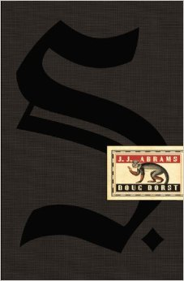
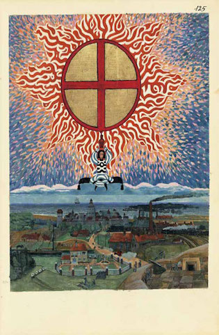
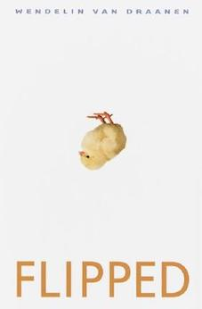
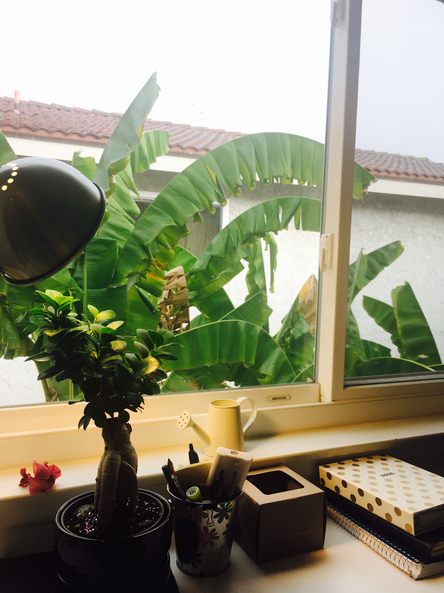

My Interest
Reading
I love reading. This is not only a learning method but a process to find myself and improve my mind.
Book I read recently

Ship of Theseus

The red book

Flipped
Planting
I love plant and I'd like to take care of them. I like watching them growing up, blooming and falling, which makes feel the breath of lives.

Music
Music is one of the most important part of my life. Sometimes I play piano, playing the music, and sometimes I just listen to them. Every pieces of music is a beautiful story.